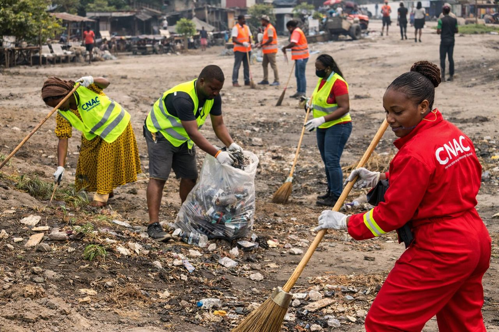
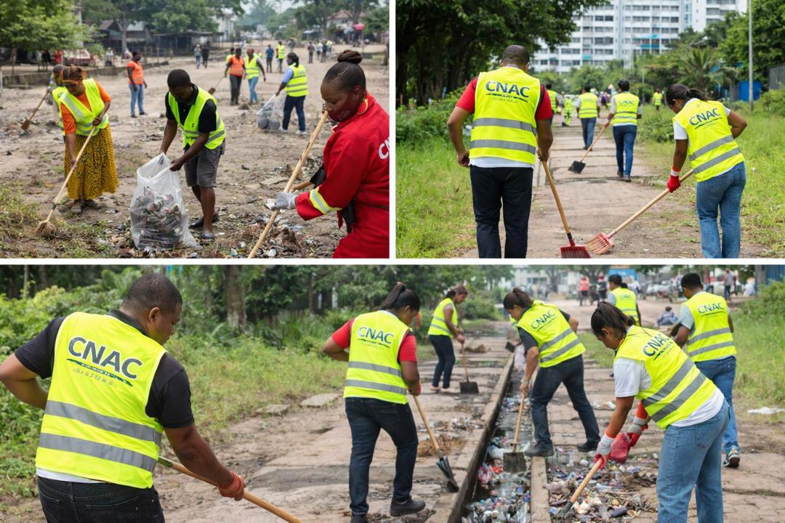

Assainissement, et
Contrôle
Commission Nationale d'Assainissement, et Contrôle. Renforcer le trésor public et assurer une bonne gouvernance économique et fiscale pour les citoyens de la République Démocratique du Congo.

Commission nationale d'assainissement, et contrôle
L'assainissement, et le contrôle sont les pilliers d'un état organisé, transparent et prospère.
Nos Missions
Le CNAC intervient dans quatre domaines clès pour assurer une meilleure gourvernance et un développement durable.

Assainissement
Protection de l'environnement et assainissement du milieu public pour une vie saine et durable.
Contrôles
Lutte contre la fraude et les détournements de deniers publics pour renforcer le trésor public.

Formation
Renforcement des capacités des agents pour une meilleure efficacité opérationnelle.